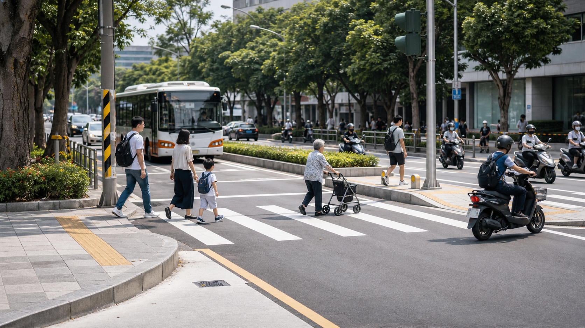

會員/對外群組與工作群分開整理，再合併成公開成果敘事。

Half-year Snapshot
半年的工作量，集中在六個方向
公開版依據兩份內部整理改寫：一份反映會員與公共議題討論，一份反映理監事及小編工作群的決策、審稿、出席與公文協調。
駕訓、道路工程、機車定位、事故回應、政策參與與人本交通邊界。
記者會、公聽會、政策協調、地方會勘、座談、媒體與跨團體合作。
涵蓋 2026 年初至 6 月 12 日上午的半年度脈絡。
What We Worked On
公開成果主線
01
駕訓改革與駕照制度
參與全台民團駕訓改革記者會，持續主張完整教材、實車道路駕駛、風險感知、路權秩序與可驗證的教練訓練。後續也針對筆試題庫與教材品質提出檢討方向。
02
高風險駕駛與重新考照
聚焦酒駕、毒駕、重大違規與吊銷禁考後重新考照制度，主張不能只增加形式課程，而應納入戒癮、醫療、功能評估、差異化課程與積極資格。
03
地方道路工程審查
在通學示範區、學校周邊、路口與地方街道改善案中，持續檢視行穿線對位、減速平台、實體人行道、轉彎軌跡、照明、視距與公車/大車停靠。
04
重大事故回應與公共運輸責任
針對長庚大學三重客運 967 事故，將個案回應推進到公車業者訓練、駕駛勞動條件、校園/醫院/園區交通法規缺口與跨機關責任。
05
政策參與與公部門程序
出席或追蹤交通罰單制度公聽會、強制險政策座談、交通部協調會與地方細設會議，同時要求會前資料、決策範圍、會後紀錄與可追蹤修正。
06
人本交通的公共論述
面對淡江大橋、兩段式左轉、低碳區、TOD、道路分級與停車管理等爭議，持續把「人本交通」拉回完整交通系統，而非單一反車、反機車或都市想像。
Selected Outcomes
從個案到制度，把問題說清楚
今年上半年，多數工作不是單次活動結束就停止，而是將事故、會勘與政策文字轉譯成更完整的制度問題：誰應負責、資料如何公開、工程怎麼驗證、駕駛資格如何重建。
駕訓改革
從記者會、協調會到政策聲明，要求交通部與公路局建立真正能教、能考、能驗證的駕駛教育系統。
道路細設
在新北後埔國小等案件中，具體提出行穿線、槽化線、減速平台、實體人行道與照明修正方向。
事故治理
將公車事故回應從單一駕駛責任，擴展到業者訓練、補助、勞動條件與跨機關治理。
公共論述
在淡江大橋與政策承諾書爭議中，堅持討論道路位階、車種定位、城郊移動與不同社經需求。
Timeline
月份重點
How We Work
聯盟的工作方法
先釐清資料與責任
不只看新聞標題，還會追問法規、設計圖、會議資料、事故脈絡與主管機關責任。
把訴求落到工程細節
從人行道寬度到轉彎軌跡，從視距到照明，讓「人本」不是抽象口號。
從個案推回制度
事故不是只找一個人負責，而要問教材、訓練、監理、業者管理與跨機關治理。
與團體、學界、媒體協作
透過連署、座談、公聽會、訪談與文件審稿，讓倡議能被更多制度節點接住。